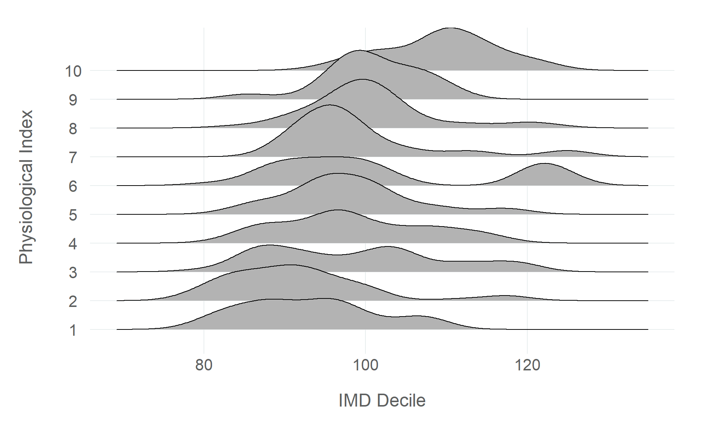

# import packagessuppressPackageStartupMessages({library(dplyr)library(ggplot2)})# ggplot theme# set minimal themetheme_set(scwplot::theme_scw(base_size =16))# table themetbl_theme<-function(x, ...){x|>gt::tab_options( table.width =gt::pct(100), table.font.names ="Arial", table.font.size =16)}# set model summary optionsoptions( modelsummary_factory_html ='gt',"modelsummary_theme_gt"=tbl_theme)# import datadf<-readr::read_csv(here::here("data", "deprivation.csv"))
Linear regression is a cornerstone of data science and statistical analysis, and is almost certainly the most common statistical method in use today (t-tests might run it close in industry). Its popularity is owed to its incredible flexibility and simplicity, as it can be used to model a wide range of relationships in a variety of contexts, and it is both extremely simple to use and to interpret. If there is one statistical method that every data scientist and analyst should be familiar with, it is linear regression (followed closely by logistic regression, and then t-tests).
Not only is linear regression a phenomenally useful tool in a data scientist’s arsenal, but it is also a fantastic way to learn about the fundamentals of statistical analysis. Linear regression serves as the perfect introduction to statistical inference, and it is a great starting point for learning about regression analysis because all regression models are based on linear regression. Once you have a good understanding of linear regression, you can then move on to more advanced regression models, such as logistic regression, Poisson regression, and so on.
This tutorial will introduce you to linear regression in R, using data pulled from two different sources. The first data source is the Public Health England’s Fingertips API (for which there are packages available in R and Python), which is a repository of public health data on a wide range of topics. The data included in this tutorial relates to health outcomes (life expectancy at birth) and deprivation (Indices of Multiple Deprivation (IMD) score and decile). The second data source is the Office of National Statistics’ Health Index, which is a composite measure of the health of the population in England. The Health Index is derived from a wide range of indicators related to three health domains: Healthy People (health outcomes), Healthy Lives (health-related behaviours and personal circumstances), and Healthy Places (wider drivers of health that relate to the places people live). The data included in this tutorial comes from two composite sub-domains in the Healthy Lives domain, which measure the physiological and behavioural risk factors that are associated with poor health outcomes. Both data sources are aggregated at the upper-tier local authority level, and the data covers the years 2015 to 2018.
7.1 Exploratory Data Analysis
First we will carry out some exploratory data analysis (EDA) to get a feel for the data, and to see if there are any obvious relationships between the variables that we can use to inform our model.
We will use the dplyr package’s glimpse() function to get a quick overview of the data, before using the psych package’s describe() function to calculate summary statistics. The describe() function can compute a wide range of summary statistics, but we will only use a few of them here (the select() function below indicates the summary statistics that will be removed).
The knitr package’s kable() function is used to format the table output to make it easier to read in HTML format.
Having taken a quick look at the data, we can now start to explore how life expectancy, our outcome variable (the variable that we are trying to explain), varies with the other variables in our dataset (the explanatory variables). We will start by plotting how life expectancy is distributed by IMD score, which is a measure of deprivation. The expectation is that there will be a negative association between the two variables, which means that areas with higher levels of deprivation (i.e. lower IMD scores) will have lower life expectancies.
df|>ggplot(aes(life_expectancy, imd_score))+geom_point(alpha =0.8, size =3, colour ='gray30')+geom_smooth(method =lm, se =FALSE, linewidth =2, colour='#005EB8')+labs(x ="Life Expectancy", y ="IMD Score")
Figure 7.1: Plotting the relationship between life expectancy and IMD scores
There is a clear negative association between life expectancy and IMD score, which is what we would expect. However, there are some outliers where life expectancy seems to be higher than would be expected given the level of deprivation. The plot seems to suggest that deprivation may have a ‘floor effect’ on life expectancy, i.e. that higher deprivation raises the floor of life expectancy, but that there are other factors that can raise life expectancy above the floor.
We can also plot the distribution of life expectancy by the Health Index scores for physiological and behavioural risk factors. These scores are index values that measure the prevalence of physiological and behavioural risk factors that are associated with poor health outcomes, against a baseline value of the national average for each risk factor in 2015. This baseline score is 100, and higher scores mean that an area has a higher prevalence of that risk factor than the national average in 2015, and lower scores mean that the area has lower prevalence. The expectation is that when the risk factor index scores increase, meaning that the risk factors are less prevalent compared against the national average, life expectancy will increase, while a decrease in the scores will be associated with a decrease in life expectancy.
df|>ggplot(aes(life_expectancy, physiological_score))+geom_point(alpha =0.8, size =3, colour ='grey50')+geom_smooth(method =lm, se =FALSE, linewidth =2, colour='#005EB8')+labs(x ="Life Expectancy", y ="Physiological Index")df|>ggplot(aes(life_expectancy, behavioural_score))+geom_point(alpha =0.8, size =3, colour ='grey50')+geom_smooth(method =lm, se =FALSE, linewidth =2, colour='#005EB8')+labs(x ="Life Expectancy", y ="Behavioural Index")
(a) Physiological Risk Factor Score
(b) Behavioural Risk Factor Score
Figure 7.2: Plotting the relationship between life expectancy and the Health Index’s physiological and behavioural risk factor scores
The plots show that there is a clear negative association between life expectancy and both the physiological and behavioural risk factor scores, which is what we would expect. However, the plots also show that there are some outliers where life expectancy seems to be higher than would be expected given the level of risk factors. The plots seem to suggest that risk factors may have a ‘floor effect’ on life expectancy, i.e. that higher risk factors raise the floor of life expectancy, but that there are other factors that can raise life expectancy above the floor.
The above plots suggest there are strong correlations between life expectancy and the three independent variables. We can confirm this by calculating a correlation matrix for the variables in our dataset, using the correlation package.
Correlations between life expectancy, deprivation, and socioeconomic
factors
Life Expectancy
IMD Score
Behavioural Score
Physiological Score
Life Expectancy
1
.
.
.
IMD Score
-.84
1
.
.
Behavioural Score
.91
-.83
1
.
Physiological Score
.60
-.39
.62
1
There are strong correlations between life expectancy and the three explanatory variables, however, the correlation between IMD score and the two Health Index scores is also relatively strong, and in the case of behavioural risk factors, it is very strong. This could be an issue, as it could mean that the model is not able to distinguish between the effects of deprivation and the effects of risk factors on life expectancy. This is known as multicollinearity, and it can cause problems when interpreting the results of a regression model.
We can also visualise the correlation between our explanatory variables, to get a better sense of how they might be related to each other. We will start by plotting IMD score against the two Health Index scores, using scatter plots, before plotting the distributions of the scores by IMD decile, using density plots. We can use the ggridges package to plot the density plots, which can be useful for plotting how continuous variables are distributed across discrete groups.
df|>ggplot(aes(imd_score, physiological_score))+geom_point(alpha =0.8, size =3, colour ='grey50')+geom_smooth(method =lm, se =FALSE, linewidth =2, colour='#005EB8')+labs(x ="IMD Score", y ="Physiological Index")df|>ggplot(aes(imd_score, behavioural_score))+geom_point(alpha =0.8, size =3, colour ='grey50')+geom_smooth(method =lm, se =FALSE, linewidth =2, colour='#005EB8')+labs(x ="IMD Score", y ="Behavioural Index")df|>mutate(imd_decile =as.factor(imd_decile))|>ggplot(aes(physiological_score, imd_decile))+ggridges::geom_density_ridges()+labs(x ="IMD Decile", y ="Physiological Index")df|>mutate(imd_decile =as.factor(imd_decile))|>ggplot(aes(behavioural_score, imd_decile))+ggridges::geom_density_ridges()+labs(x ="IMD Decile", y ="Behavioural Index")
(a) IMD & Physiological Score
(b) IMD & Behavioural Score

(c) IMD Decile & Physiological Score
(d) IMD Decile & Behavioural Score
Figure 7.3: Plotting the relationship between IMD scores/deciles and the Health Index’s physiological and behavioural risk factor scores
The correlations are a little more obvious when visualised. The behavioural index scores have a negative linear association with IMD scores (and a positive linear association with IMD decile). This means that areas with higher level of deprivation also tend to have a higher prevalence of behavioural risk factors that are associated with poor health outcomes. The physiological index scores have a similar association with deprivation, but the relationship is not as strong as the behavioural risk factors, and there is significant variance around the linear trend.
7.2 Linear Regression
First we will transform each of the explanatory variables to make them a little easier to interpret (particularly with regard to the intercept). If we don’t transform the variables, the intercept will be based on zero values of each explanatory variable, which is not very meaningful. For example, a zero value of either risk factors variable is effectively meaningless because the ONS Health Index is centred around a baseline value of 100 (which is the average value for England in 2015, the first year for which the Health Index was calculated).
These transformations won’t impact the regression results, but will just make the results easier to interpret and explain, as the intercept is no longer based on zero values of each explanatory variable.
# calculate the imd score mean and standard deviationimd_centre<-mean(df$imd_score)imd_scale<-sd(df$imd_score)# use 100 as the centre for the risk factors and calculate the standard deviationphysiological_centre<-100physiological_scale<-sd(df$physiological_score)behavioural_centre<-100behavioural_scale<-sd(df$physiological_score)# transform the variablesdf<-df|>mutate( imd_transformed =(imd_score-imd_centre)/imd_scale, physiological_transformed =(physiological_score-physiological_centre)/physiological_scale, behavioural_transformed =(behavioural_score-behavioural_centre)/behavioural_scale)# check the transformationsglimpse(df)
Having transformed the variables, we can now fit a linear regression model to the data. We will use the lm() function from the Base R stats package. Constructing a linear regression in R is very simple, and the syntax is relatively intuitive. The first argument in the function is the formula, which is the dependent variable on the left-hand side, and the independent variables on the right-hand side, separated by a ~ symbol. The second required argument is the data argument, which gives the lm() function a dataset to fit the regression to. There are a number of optional arguments that can be passed to the function to control the model fitting process, but we will use the default values for now.
After fitting the regression model, we can call the summary() function to get a summary of the model results. This will give us the model coefficients, standard errors, t-statistics, p-values, and \(R^2\) value. However, in this instance we will use the sjPlot::tab_model() function to get a nice table of the model results which renders better in HTML.
# fit linear regressionmodels<-list("OLS (Raw)"=lm(life_expectancy~imd_score+physiological_score+behavioural_score, data =df),"OLS (Normalised)"=lm(life_expectancy~imd_transformed+physiological_transformed+behavioural_transformed, data =df))# get model results tablemodels|>modelsummary::modelsummary( estimate ="estimate", statistic ="conf.int", stars =TRUE, coef_rename =c("imd_score"="IMD Score","imd_transformed"="IMD Score","physiological_score"="Physiological Score","physiological_transformed"="Physiological Score","behavioural_score"="Behavioural Score","behavioural_transformed"="Behavioural Score"), gof_map =c("nobs", "r.squared", "rmse"), output ="gt")|>gt::tab_source_note(source_note ="Source: PHE Fingertips/ONS Health Index")
Table 7.3:
Regression model estimating the effect of socioeconomic factors on
life expectancy
OLS (Raw)
OLS (Normalised)
(Intercept)
71.592***
81.245***
[70.367, 72.816]
[81.193, 81.298]
IMD Score
-0.077***
-0.623***
[-0.089, -0.066]
[-0.713, -0.533]
Physiological Score
0.024***
0.239***
[0.017, 0.030]
[0.173, 0.304]
Behavioural Score
0.091***
0.908***
[0.079, 0.103]
[0.789, 1.026]
Num.Obs.
583
583
R2
0.844
0.844
RMSE
0.64
0.64
+ p < 0.1, * p < 0.05, ** p < 0.01, *** p < 0.001
Source: PHE Fingertips/ONS Health Index
7.3 Evaluating and Interpreting Regression Models
When we fit a regression model, we have to consider both how well the model fits the data (evaluation) and the influence that each explanatory variable is having on the outcome (interpretation). The evaluation process is making sure that the model is doing a good enough job that we can reasonably draw some conclusions from it, while the interpretation process is understanding the conclusions we can draw. It’s important to understand the purpose that both of these processes serve, and to understand that the evaluation process is just kicking the tires, while what we are ultimately concerned with is the interpretation.
There are several elements to consider when interpreting the results of a linear regression model. Broadly speaking the focus should be on the magnitude and the precision of the model coefficients. The magnitude of the coefficients indicates the strength of the association between the explanatory variables and the outcome variable, while the precision of the coefficients indicates the uncertainty in the estimated coefficients. We use the regression model coefficients to understand the magnitude of the effect and standard errors (and confidence intervals) to understand the precision of the effect.
7.3.1 Model Evaluation
There are a number of ways we might evaluate model performance, but the starting point should be the model’s \(R^2\) and the p-values of the model coefficients. These can help us consider whether the model fits the data and whether we have enough data to trust the conclusions we can draw from each explanatory variable.
7.3.1.1\(R^2\)
The \(R^2\) value is the proportion of the variance in the outcome that is explained by the model. It is often used as a measure of the goodness of fit of the model, and by extension the extent to which the specified model explains the outcome, but caution should be applied when using \(R^2\) this way, because \(R^2\) can be misleading and doesn’t always tell the whole story. One of the main problems with \(R^2\) when used in an inferential context is that adding more variables to the model will always increase the \(R^2\) value, even if the new variables are not actually related to the outcome. Adjusted \(R^2\) values are used to account for this problem, but they don’t resolve all issues with \(R^2\), so it is important to consider \(R^2\) as just one of a number of indicators of the model’s fit. If the \(R^2\) is high, this doesn’t necessarily mean that the model is a good fit for the data, but if the \(R^2\) is particularly low, this might be a good indication that the model is not a good fit for the data, and at the very least it is good reason to be cautious about the results of the analysis, and to take a closer look at the model and the data to understand why the \(R^2\) is so low.
Defining high/low \(R^2\) values is dependent on the context of the analysis. The theory behind the model should inform our expectations about the \(R^2\) value, and we should also consider the number of explanatory variables in the model (adding variables to a regression will increase the \(R^2\)). If the theory suggests that the model should explain a small amount of the variance in the outcome, and the model has only a few explanatory variables, then a low \(R^2\) value might not be a cause for concern.
The Adjusted \(R^2\) value for the above regression model is 0.843, which means that the model explains 84.3% of the observed variance in life expectancy in our dataset. This is a relatively high \(R^2\) value.
7.3.1.2 P-Values
P-values are the probability of observing a coefficient as large as the estimated coefficient for a particular explanatory variable, given that the null hypothesis is true (i.e. that the coefficient is equal to zero), indicating that no effect is present. This can be a little tricky to understand at first, but a slightly crude way of thinking about this is that p-values are an estimate of the probability that the model coefficient you observe is actually distinguishable from zero.
P-values are used to test the statistical significance of the coefficients. If the p-value is less than the significance level then the coefficient is statistically significant, and we can reject the null hypothesis that the coefficient is equal to zero. If the p-value is greater than the significance level, then the coefficient is not statistically significant, and we cannot reject the null hypothesis that the coefficient is equal to zero. The significance level is often set at 0.05, which means that we are willing to accept a 5% chance of incorrectly rejecting the null hypothesis. This means that if the p-value is less than 0.05, then there is a greater than 95% probability that the coefficient is not equal to zero. However, the significance level is a subjective decision, and can be set at any value. For example, if the significance level is set at 0.01, then we are willing to accept a 1% chance of incorrectly rejecting the null hypothesis.
In recent years p-values (and the wider concept of statistical significance) have been the subject of a great deal of discussion in the scientific community, because there is a belief among many practitioners that a lot of scientific research places too much weight in the p-value, treating it as the most important factor when interpreting a regression model. I think this perspective is correct, but I think dismissing p-values entirely is a mistake too. The real problem is not with p-values themselves, but with the goal of an analysis being the identification of a statistically significant effect.
I think the best way to think about p-values is the position prescribed by Gelman, Hill, & Vehtari in Regression & Other Stories. Asking whether our coefficient is distinguishable from zero is the wrong question. As analysts, we should typically know enough about the context we are studying to build regression models with explanatory variables that will some effect. The question is how much. A statistically insignificant model coefficient is less a sign that a variable has no effect, and more a sign that there is insufficient data to detect a meaningful effect. If our model coefficients are not statistically significant, it is simply a good indication that we need more data. If the model coefficients are statistically significant, then our focus should be on interpreting the coefficients, not on the p-value itself.
7.3.2 Model Interpretation
Model interpretation is the process of understanding the influence that each explanatory variable has on the outcome. This involves understanding the direction, the magnitude, and the precision of the model coefficients. The coefficients themselves will tell us about direction and magnitude, while the standard errors and confidence intervals will tell us about precision.
7.3.2.1 Model Coefficients
The model coefficients are the estimated values of the regression coefficients, or the estimated change in the outcome variable for a one unit change in the explanatory variable, while holding all other explanatory variables constant. The intercept is the estimated value of the outcome variable when all of the explanatory variables are equal to zero (or the baseline values if the variables are transformed).
A regression’s coefficients are the most important part of interpreting the model. They specify the association between the explanatory variables and the outcome, telling us both the direction and the magnitude of the association. The direction of the association is indicated by the sign of the coefficient (positive = outcome increases with the explanatory variable, negative = outcome decreases with the explanatory variable). The magnitude of the association is indicated by the size of the coefficient (the larger the coefficient, the stronger the association). If the direction of the association is going in the wrong direction to that which we expect, this obviously indicates issues either in the theory or in the model, and if the magnitude of the effect is too small to be practically significant, then either the explanatory variable is not a good predictor of the outcome, or the model is not doing a good job of fitting the data (either the explanatory variable doesn’t really matter or the model is not capturing the true relationship between the explanatory variables and the outcome). However, while the direction is relatively easy to interpret, magnitude is not, because what counts as a practically significant effect is dependent on the context of the analysis.
7.3.2.2 Standard Errors
The standard errors are the standard deviation of the estimated coefficients. This is a measure of the precision of the estimated association between the explanatory variables and the outcome. The larger the standard error, the less precise the coefficient estimate. Precisely measured coefficients suggest that the model is fitting the data well, and we can be confident that the association between the explanatory variables and the outcome is real, and not just a result of random variation in the data. Defining what counts as ‘precise’ in any analysis, much like the coefficient magnitude, is dependent on the context of the analysis. However, in general, a standard error of less than 0.5 is considered to be a good estimate, and a standard error of less than 0.25 is considered to be a very precise estimate.
It is important to recognise that a precise coefficient alone cannot be treated as evidence of a causal effect between the explanatory variable and the outcome but it is, at least, a good indication that the explanatory variable is a good predictor of the outcome. In order to establish a causal relationship, we may consider methods that are more robust to the presence of confounding or omitted variables, the gold standard being randomised controlled trials, but with a strong theoretical basis and a good understanding of the data, we can make a good case for a causal relationship based on observational data.